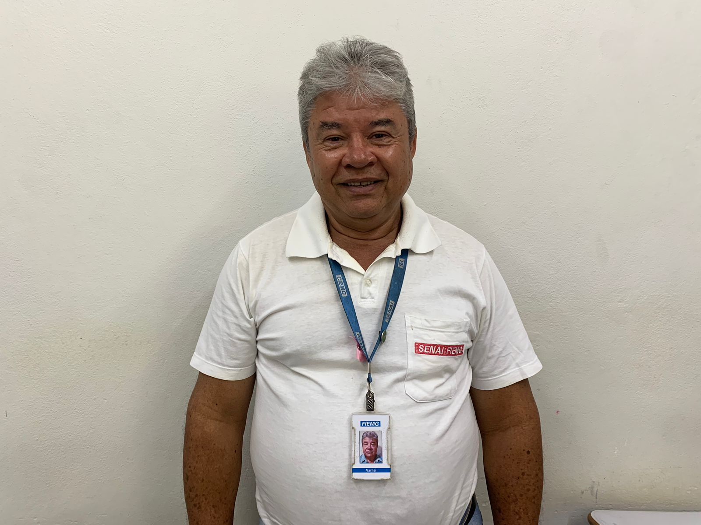

Aprendizagem Industrial em Mecânica
Sobre o curso
O curso de Aprendizagem em Mecânica do Inova Cursos oferece uma formação especializada para preparar profissionais aptos a enfrentar os desafios dinâmicos do mundo industrial. Com um foco claro na excelência prática e teórica, nosso programa destaca-se pela ênfase em habilidades técnicas essenciais para os profissionais da área.
O Profissional
Mais do que apenas entender máquinas, o mecânico é encarregado de impulsionar a inovação e a eficiência em uma variedade de setores industriais. No mercado de trabalho, é essencial estar bem preparado, ser proativo e possuir uma mentalidade criativa para liderar projetos mecânicos com inventividade e destreza.

Diferenciais
Aprendizado Baseado em Projetos: Os estudantes participam de projetos de engenharia mecânica reais desde o primeiro semestre, permitindo-lhes aplicar seus conhecimentos em situações do mundo real.
Certificações Industriais: Preparamos os alunos para obter certificações reconhecidas pela indústria, o que aumenta suas credenciais e oportunidades de emprego.
Laboratórios de Tecnologia Avançada: Oferecemos acesso a laboratórios equipados com tecnologia de ponta.
Oportunidade de aplicar seus conhecimentos em consultorias a pequenas empresas, proporcionando uma vivência real do mundo profissional.
Projetos Colaborativos Interdisciplinares: Estimulamos projetos interdisciplinares que espelham desafios profissionais reais, promovendo habilidades de trabalho em equipe e criatividade.
Simulações e Prototipagem Rápida: Integramos simulações e prototipagem para que os alunos testem suas ideias em ambientes virtuais e físicos, promovendo criatividade e habilidades técnicas.
Desenvolvimento de Projetos Empreendedores: Incentivamos projetos empreendedores, apoiando a transformação de ideias inovadoras em negócios reais, estimulando o espírito empreendedor dos estudantes.